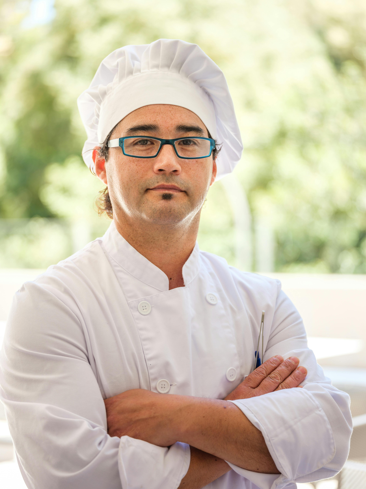

É com grande entusiasmo que recebemos o Chef Eduardo Almeida como nosso novo Chef Executivo. Reconhecido globalmente por sua habilidade excepcional e criatividade culinária, Chef Almeida é uma verdadeira lenda na arte da cozinha. Formado na renomada Culinary Institute of America e com uma carreira que abrange os melhores restaurantes do mundo, Chef Almeida traz uma combinação impressionante de técnica refinada e inovação. Seu trabalho é uma celebração da culinária contemporânea, misturando sabores tradicionais com uma abordagem moderna e ousada. Estamos ansiosos para ver o impacto positivo que o Chef Eduardo Almeida terá em nossa cozinha e confiantes de que sua expertise transformará nossa oferta gastronômica. Dê as boas-vindas a este talentoso chef e prepare-se para uma experiência culinária excepcional!
